Avant l'invention des robots et aspirateurs automatiques, l'entretien des piscines reposait entièrement sur le travail manuel et l'huile de coude. On retirait les débris flottants à l'aide d'épuisettes à long manche, puis on frottait les parois et le fond avec des brosses manuelles.
À une époque où la technologie n'avait pas encore tout automatisé, chacun était fier d'entretenir son bassin soi-même, transformant cette corvée en un rituel estival simple et gratifiant.
Personne n'imaginait alors qu'un appareil autonome pourrait un jour prendre le relais. Jusqu'à ce que des ingénieurs décident de transformer l'entretien des piscines en un processus entièrement automatique. C'est ainsi que sont nés les premiers robots nettoyeurs, capables de parcourir le fond et les parois du bassin sans la moindre intervention humaine.


Depuis l’arrivée des nettoyeurs automatiques sur le marché, les ventes de manches télescopiques et d'épuisettes manuelles ont chuté de façon spectaculaire. Face à la rapidité et au confort de ces nouveaux robots, les consommateurs ont massivement délaissé l'équipement traditionnel, plongeant l'industrie de l'entretien manuel dans une crise sans précédent.
Devant l'ampleur de la polémique et la grogne des fabricants d'outils traditionnels, les représentants des nettoyeurs automatiques ont organisé une conférence de presse officielle pour se défendre. Ils y ont affirmé que leur invention ne visait pas à détruire un savoir-faire, mais simplement à libérer les propriétaires de piscines d'une corvée épuisante.
MAIS

Pour apaiser les tensions grandissantes entre les partisans de l'entretien manuel et les défenseurs des robots, plusieurs rencontres de conseil ont été organisées des deux côtés. Ces discussions diplomatiques avaient un objectif clair : calmer le jeu et éviter une rupture totale dans l'industrie du nettoyage de piscines.
Après de longues négociations, le clan des manches télescopiques et celui des nettoyeurs automatiques ont finalement trouvé un terrain d'entente. Chacun a reconnu l'utilité de l'autre : l'automatisation pour le nettoyage quotidien du fond, et les outils manuels pour les finitions précises et les recoins difficiles d'accès.
Cette trêve semble ramener le calme autour des bassins, mais doit-on tout de même avoir peur pour la suite ? Avec des technologies toujours plus autonomes et intelligentes, l'équilibre entre l'humain et la machine reste fragile.